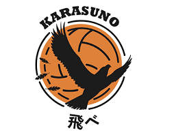
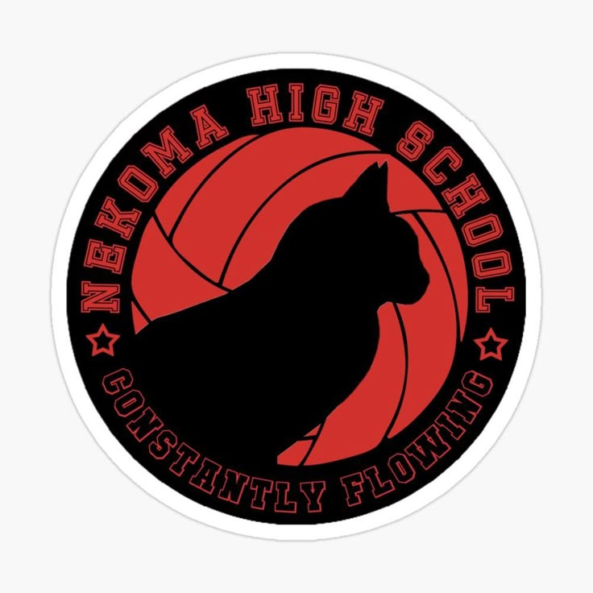
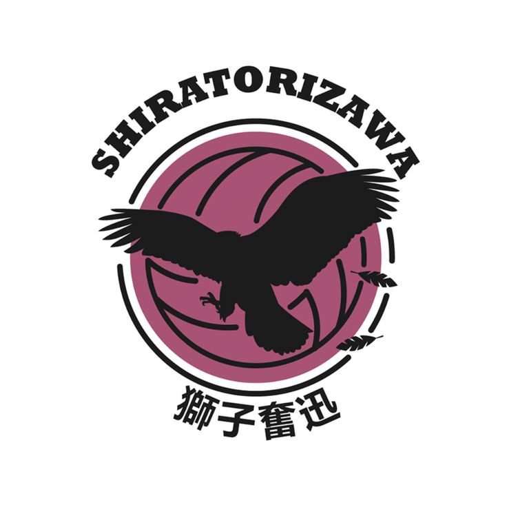
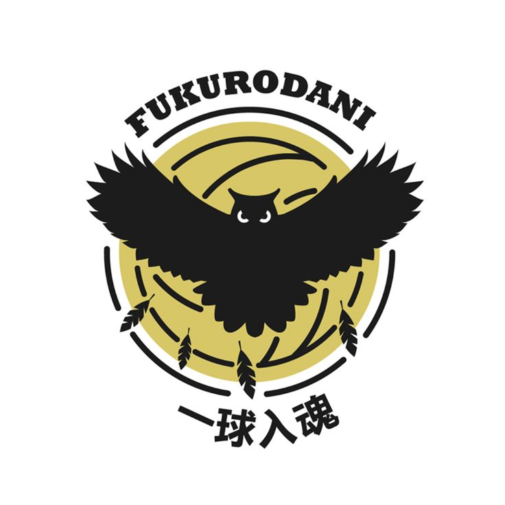
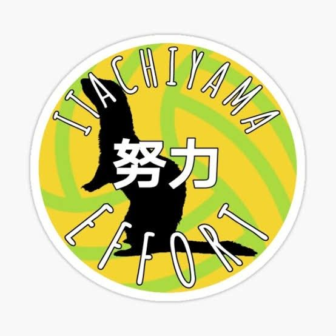

Os Times do Vôlei Colegial
Colégio Karasuno

Filosofia
A filosofia do Karasuno é a da evolução constante e da agressividade total, adotando o lema de que "não há vitória sem riscos". Eles se recusam a estagnar, preferindo absorver as táticas dos adversários no meio do jogo e usar um poder ofensivo implacável para destruir defesas.
O Time
Conhecidos como os "corvos caídos", eles se reerguem usando a imprevisibilidade. É um time focado puramente na ofensiva, famoso pelo "ataque rápido esquisito" de Kageyama e Hinata, saques potentes e o ataque sincronizado.
Nekoma High School

Filosofia
A filosofia do Nekoma é a resiliência e a conexão perfeita, simbolizada pela frase "nós somos o sangue que flui suavemente para manter o cérebro funcionando". Eles acreditam que, se a bola não cair no chão, o adversário eventualmente cometerá erros.
O Time
Rivais históricos do Karasuno, os "gatos" se destacam por uma defesa de chão impecável e recepções cirúrgicas. O time inteiro joga para proteger e dar suporte ao seu levantador, Kenma Kozume.
Aoba Johsai / Seijoh

Filosofia
A filosofia do Seijoh se baseia no equilíbrio, na inteligência coletiva e no lema de que "o talento floresce, o instinto se afia". Eles acreditam que o voleibol é um esporte de seis jogadores e que a força de uma equipe vem da sinergia e da ausência de erros.
O Time
Comandado pelo brilhante levantador Tooru Oikawa, o Seijoh é um dos times mais completos e consistentes da província. Eles jogam um vôlei fluido, extremamente técnico e com saques agressivos.
Date Tech

Filosofia
A filosofia do Date Tech é o domínio absoluto da rede através da intimidação e do bloqueio. Eles acreditam que uma defesa aérea intransponível é a melhor forma de quebrar o espírito do adversário.
O Time
Famosos pela "Muralha de Ferro", o Date Tech utiliza o sistema de "bloqueio de leitura", onde os jogadores se movem apenas após a bola sair da mão do levantador.
Shiratorizawa Academy

Filosofia
A filosofia do Shiratorizawa é a da força bruta, simplicidade e meritocracia. Eles rejeitam táticas complexas, acreditando que a potência física pura e a altura são os caminhos mais eficientes para esmagar qualquer oponente.
O Time
O time funciona como uma verdadeira monarquia construída ao redor de seu capitão canhoto, Wakatoshi Ushijima, um dos melhores pontuadores do país.
Fukurodani Academy

Filosofia
A filosofia do Fukurodani é o suporte mútuo e a maturidade coletiva. Eles entendem que uma grande estrela precisa de uma base sólida para brilhar.
O Time
Uma das maiores potências de Tóquio, o time é liderado pelo carismático atacante Kotaro Bokuto. Como Bokuto é propenso a crises de humor e oscilações emocionais em quadra, os outros membros do Fukurodani mantêm o placar estável até que seu capitão recupere o foco.
Inarizaki

Filosofia
Baseia-se no lema "não precisamos de memórias", focando totalmente no presente. Para eles, o sucesso passado gera estagnação, sendo necessário arriscar e evoluir constantemente.
O Time
É uma força avassaladora e imprevisível em quadra. O coração da equipe são os Gêmeos Miya, Atsumu e Osamu, capazes de copiar e aprimorar jogadas rivais em minutos.
Itachiyama

Filosofia
Pauta-se no realismo, na preparação minuciosa e no controle absoluto de riscos. Em vez do caos, o time busca a precisão cirúrgica, a resiliência mental e a eliminação de erros simples.
O Time
Apresenta o equilíbrio perfeito entre ataque e defesa. Destacam-se Kiyoomi Sakusa, Motoya Komori e Tsukasa Iizuna.